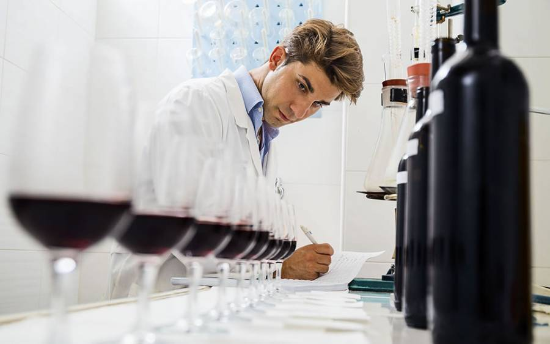

¿Qué es la enología?

La raíz etimológica de la palabra enología proviene del griego “oinos” (equivalente a “vino”) y
“logos”b(equivalente a “conocimiento”). La unión de ambos vocablos, origina el término con el que se designa la
actividad especializada, definida como “la ciencia que trata todo lo relativo a los vinos y a los mostos de
uva”, y como
el “conjunto de conocimientos y técnicas relativos a los procesos de elaboración y crianza de vinos.”
Están incluidos dentro de la enología, el estudio de la elaboración de los productos vínicos y no vínicos, como
así también sus subproductos, con todo el gran universo que ello acarrea. De hecho, hoy en día el enólogo no se
ocupa sólo ynestrictamente de “hacer el vino”, sino que posee una importante participación en el terruño y las
decisiones a tomar en él, los insumos, los proveedores y los mercados a abordar, entre otros.
La enología aplica para sí misma otras ciencias, como la química, la física, la botánica y la agronomía. Es
unandisciplina susceptible de permanente estudio y evolución, donde también ejercen una fuerte impronta las
costumbresny los
legados generacionales, además de, por supuesto, las diversas experiencias por las que va transitando el
enólogona lo largo de su carrera, año tras año, cosecha tras cosecha.
Y como la gran mayoría de las asignaturas de la humanidad, nació como un arte que inicialmente se transmitía y
enseñabandesde los adultos hacia los menores, primero en las tribus, luego en los pueblos, y finalmente en los
reinos y
naciones. Conforme avanzaron las épocas y el vino fue sumando protagonismo, la enología comenzó a ganar en
importancia y
relevancia. Se debe aclarar que, como en todos los proyectos, se cuenta con un líder o conductor, pero la
enología no se reduce a una sola persona, sino que se trata del enólogo y su equipo. En ocasiones, un gran
equipo. Se estipula en líneas generales, que la enología moderna tuvo la siguiente evolución de tres etapas en
las últimas quince décadas:
Enología Curativa (1870 a 1960):
Con el microbiólogo y químico francés Luis Pasteur y sus importantes hallazgos, se inició el camino de la
enología
científica. El estudio de las levaduras y su metabolismo abrió las puertas a todo un mundo nuevo, como así
también
sus aportes científicos sobre las bacterias y, claro está, la pasteurización. Además de Pasteur, otros eruditos
realizaron importantes contribuciones para que se pueda comprender como “curar” a los mostos y los
vinos.
Enología Preventiva (1961 a 1990):
Para esos años, en muchas universidades del planeta se estudia la importancia de las actividades enzimáticas
prefermentativas de la uva y del mosto, siendo que con los resultados los profesionales de la enología comenzaron
a entender los cuidados necesarios que se requieren en la cosecha y en los tratamientos de molienda,
maceración y prensado, de modo tal de proteger el mosto para no tener que corregir el vino. Es en este periodo
donde surgen diversos tratamientos preventivos, marcando un nuevo salto cualitativo.
Enología Sensitiva (a partir de 1991):
Aquí es donde hace su aparición el axioma “los grandes vinos nacen en el viñedo”. Aunque se trata en realidad de
un antiguo precepto francés, retomó su vigencia a nivel mundial en esa época. Desde el control de la producción de
racimos por planta, hasta la cantidad de hojas en relación a los racimos, pasando por la exposición solar, el
riego, el sistema de conducción y el tipo de suelo, todo centró la atención de los vitivinicultores en el terruño.
Paralelamente, el análisis sensorial (la degustación) de las uvas, los mostos y los vinos, cobró una relevancia
nunca vista.
Sin dudas, la enología sensitiva había llegado para quedarse. Y los sentidos, la sensibilidad y la pasión, tomaron
su rol protagónico. ¿Pero como no lo iban a hacer, si el vino es todo eso? Por ende, sus hacedores, el enólogo y
su equipo, deben contar con una importante porción de romanticismo, dulzura, creación y espiritualidad hacia el
vino, difícil de comprender para aquel que no la comparta. Esto, claro está, aparte de la formación profesional y
disciplinaria que le permitirá sentar las bases para todo lo anterior.